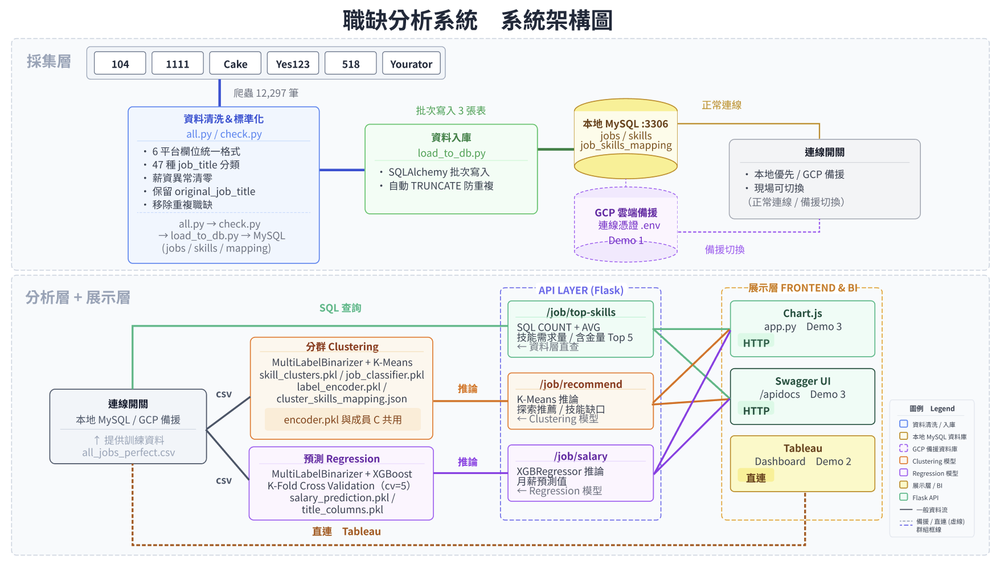

Final Project · Big Data & AI Engineering
台灣工程師
職缺競爭力
分析系統
台灣工程師求職資訊高度分散，技能需求與薪資透明度不足。
本專案整合六大求職平台、機器學習模型與即時 API，
協助求職者精準掌握市場定位與技能缺口。
6 大平台爬蟲
12,297 筆職缺
3 支 AI API
Tableau 7 故事頁
12,297
筆職缺資料
104 · 1111 · Yes123 · Cake · 518 · Yourator
15
工程師職類
AI / 前端 / 後端 / 雲端 / 韌體…
3
API 端點
推薦 · Skill Gap · 薪資預測
Problem → Solution → Impact
⚠
痛點為何
求職資訊碎片化
- 六大平台資料格式不一，難以橫向比較
- 技能需求與薪資透明度低，面議比例高達 44%
- 缺乏客觀的「技能缺口」量化工具
→
⚙
解決方案
端對端 AI 數據管線
- 統一爬取、ETL 清洗、MySQL 入庫
- K-Means 技能分群 + XGBoost 薪資迴歸
- Flask RESTful API + Tableau 視覺化
→
✦
成果呈現
即時可互動的分析平台
- 輸入技能組合，秒算 Skill Gap 與適配職類
- AI 預測月薪區間，精準度持續可優化
- Tableau 7 頁故事，完整呈現市場結構
Team · 四人分工
專案組長，統籌全組分工排程，主導架構設計、資料管線建置與 BI 視覺化
組長職責：主題確認、任務分工、工作時程制定、資料來源確認，建立專案資料夾架構與簡報製作統籌
設計 MySQL 3 表 Schema，制定 12 欄爬蟲規格與技能白名單，規範全員開發標準
ETL 清洗整合 12,297 筆跨平台資料，部署本地 MySQL + GCP Cloud SQL 雙備援
規劃主導 Tableau 7 頁敘事架構，直連 MySQL 即時呈現市場洞察
建構職缺推薦核心：技能向量化 → 分群 → 監督式職類分類
77 種技能 NLP 向量化 → K-Means（n=15）→ GradientBoosting，從無監督改為監督式架構
APP工程師 F1=0.69、前端 F1=0.60、AI工程師 F1=0.58，整體準確率 46.64%
輸出 encoder.pkl 供薪資預測模型共用，完成 cluster_skills_mapping.json 技術文件
排除面議職缺，以真實公開薪資訓練 XGBoost 迴歸預測模型
特徵工程：職稱 One-Hot + 工作年資 + 技能 MultiLabelBinarizer，三類特徵矩陣合併
XGBoost Regressor：RMSE 18,287、R² 0.6215，5-fold CV RMSE 18,144（穩定）
輸出 salary_prediction.pkl + title_columns.pkl，與 Asher 共用 encoder.pkl
封裝全系統 Flask API，串接兩支 AI 模型，完成三個 Demo 點整合
Flask 封裝 3 支 RESTful API（/recommend · /salary · /top-skills），載入全部 .pkl 模型
Flasgger Swagger UI 自動文件 + Streamlit 互動前端，同時支援 API 與 UI 兩種 Demo 形式
全系統整合測試，驗證 GCP 備援切換，確保 Demo 當天三個 Demo 點順暢執行
Development Phases · 六大開發階段
Phase 0
專案啟動與環境建置 Reyna 全員協作
Reyna 主導專案規劃與架構設計，包含主題確認、任務分工、工作時程制定、資料來源確認。
建立 GitHub Repo（ai-job-analysis-pipeline）並完成專案骨架：.env.example · .gitignore · README.md · requirements.txt · data/ · scrapers/。
同步設計三張 MySQL 資料表（jobs / skills / job_skills_mapping），制定 12 欄爬蟲欄位規格與技能白名單字典，發布 DevOps SOP 供全員遵循。
專案規劃
主題確認 → 任務分工 → 時程排定 → 資料源確認
資料庫 & DevOps 設計
ER Diagram · 3 張表 Schema · 12 欄爬蟲規格 · GitHub SOP
Output：GitHub Repo · .env.example · DB Schema · 爬蟲規格書
Phase 1
資料蒐集 全員
爬取 104、1111、Yes123、CakeResume、518、Yourator，每人負責 3,000+ 筆，格式統一為乾淨 CSV。
KPI：總計 12,000 筆以上
Phase 2
資料整合入庫 Reyna Cosmos 協助
Reyna 主導 CSV 合併去重、ETL 清洗、寫入 MySQL，同步建立 GCP 雲端備援，輸出 all_jobs_perfect.csv 至 GitHub data/。Cosmos 協助檢查檔案清洗無誤與資料庫確認。
Output：黃金訓練集 .csv
Phase 3
AI 模型訓練 Asher Ryan
Asher · 分群模型
MultiLabelBinarizer → K-Means（n=15）→ GradientBoosting
77 種技能 One-Hot → K-Means 壓縮成 15 維距離特徵 → GradientBoosting 監督式分類 15 個核心職類。首次嘗試 KMeans 職缺分群（雙層無監督）因前端與 AI 技能向量過近放棄，改為監督式架構。
整體準確率 46.64%
APP工程師 F1=0.69
前端 F1=0.60
AI工程師 F1=0.58
Output：encoder.pkl · skill_clusters.pkl · job_classifier.pkl · label_encoder.pkl · cluster_skills_mapping.json · predict_example.py
Ryan · 薪資預測模型
One-Hot（職稱）+ 年資 + MultiLabelBinarizer（技能）→ XGBRegressor
排除面議職缺（is_negotiable=0），目標變數為（min+max）/2 平均月薪。特徵矩陣合併職稱 One-Hot、工作年資、技能 MLB 三類。最終採用 XGBRegressor，以 5-fold 交叉驗證評估泛化穩定性，K-Fold 平均 RMSE 18,144 表現穩定。
XGBoost RMSE 18,287
R² 0.6215
K-Fold RMSE 18,144 ✓
Output：salary_prediction.pkl · title_columns.pkl （encoder.pkl 由 Asher 提供共用）
Phase 4
後端 API & 前端 Cosmos Reyna 前端支援
Cosmos 主導：讀取 models/ 中所有 .pkl，封裝成 3 支 Flask API，Swagger 自動文件，Streamlit 前端介面，全系統整合測試。Reyna 協助前端介面開發與視覺呈現。
Output：/recommend · /salary · /top-skills
Phase 5
Tableau & 簡報製作 Reyna 規劃主導 全員協作
Reyna 統籌規劃 Tableau 敘事架構與簡報分工，主導直連 MySQL 建置 Dashboard 框架；Asher / Ryan / Cosmos 依分工協作完成各頁圖表製作，共同討論敘事角度（資料來源、公司分析、薪資分布、技能四象限、市場趨勢）。全員共同完成 P1–P14 簡報製作。
Output：Tableau Public 7 Story Points · 簡報 P1–P14
Phase 6
專案收斂交付 全員
GitHub 統整、製作 P1–P14 簡報、Live Demo 彩排，確認三個 Demo 點（API / Tableau / GCP 切換）順暢執行。
Deliverable：簡報 + Live Demo + GitHub
AI Job Competency Analysis System · MVP Demo
工程師職缺市場分析
整合 104、1111、Yes123、CakeResume、518、Yourator 六大平台共 12,297 筆工程師職缺，涵蓋 15 種職類與 77 項技能維度，提供即時的市場趨勢分析。
📊
Total Records
12,297
筆職缺 · 6 大平台
⚡
Skill Dimensions
77
語言 / 框架 / 工具
🔗
API Endpoints
3
推薦 / Gap / 薪資
Market Charts · Live API
Key Findings · 資料洞察
Top Demand Skill
Python — 1,516 listings
市場需求第一，占 AI 工程師職缺 76%；Git（1,035）、Excel（1,387）、AutoCAD（1,229）緊追其後
Highest Salary Ceiling
全端 & 後端工程師
兩者薪資分布最廣（Box plot P75 最高），突破天花板機率遠高於其他職類
Fresh Graduate Demand
製造 / 設備 · 營建工程
0 年缺分別達 1,134 & 843 筆，遠超其他職類，新鮮人最容易切入
Salary Growth Trap
多數職類 0→3yr < NT$3K
大多數職類 0→3 年薪資成長不到 NT$3K；例外：後端 NT$49K→NT$72K，跳槽效益遠大於等待調薪
High ROI Skills — 最值得學
Docker · Kubernetes · Go
這三項同時滿足「需求量高於市場中位數」+「薪資高於市場平均」，學了既好找工作又加薪，投資報酬率最高
Salary Transparency
56.14% 職缺明碼標價
43.86% 仍為面議；製造 / 設備、電子 / 電機面議比例最高，軟體職類透明度相對最高
Powered by KMeans + XGBoost
AI 互動分析工具
輸入你的技能組合，AI 模型即時分析你的市場定位、技能缺口，並預測對應的薪資區間。
Interactive Visualization · 7 Story Points
Tableau 深度分析儀表板
以 7 個敘事頁面完整呈現台灣工程師市場，涵蓋公司分析、薪資分布、技能四象限等深度洞察。
15 種工程師職缺完整分析
資料來源：104 · 1111 · Yes123 · CakeResume · 518 · Yourator | 12,297 筆 · Tableau Public 互動呈現
Story Points · 點擊圖表內箭頭切換分頁
P1 · 從哪裡來？市場要誰？資料來源分布 + 年資需求結構
P2 · 哪些公司在招人？Google、TSMC 職缺結構比較
P3 · 新鮮人去哪？薪資分布15 職類缺比與薪資天花板
P4 · 哪些職位薪資標準？透明度 vs 面議比例分析
P5 · 市場要什麼技能？Treemap + 職類高頻技能占比 含篩選器
P6 · 最值得學的技能？高薪 × 高需求四象限分析
P7 · 最值得放棄的技能？普及低薪 vs 加分區地圖
▶ 嵌入式版本：使用圖表內左右箭頭切換分析頁，每頁支援 hover 互動；P5「市場要什麼技能？」頁面另有職稱篩選器可互動篩選
End-to-End Data Pipeline
技術架構 System Overview
從資料爬取、清洗、模型訓練到 API 服務與視覺化呈現，完整的端對端 AI 數據管線。
System Architecture · 系統架構圖

資料清洗 / 入庫
本地 MySQL 資料庫
GCP 備援資料庫
Clustering 模型
Regression 模型
Flask API
展示層 / BI
Pipeline Flow
01 · Ingest
資料爬取
Selenium + BeautifulSoup 爬取 6 大平台（104 · 1111 · Yes123 · Cake · 518 · Yourator），格式統一後存入 MySQL
02 · Train
模型訓練
K-Means 技能分群 + GradientBoosting 職類分類（Asher）· XGBoost 薪資預測迴歸（Ryan）
03 · Serve
Flask RESTful API
3 支 API 端點 · Swagger 自動文件 · PyMySQL 即時查詢
04 · Visualize
視覺化
Chart.js 即時圖表 · Tableau Public 7 頁故事分析
Technology Stack
Scrape
Selenium + BS4
網路爬蟲 · 6 大招募平台
Storage
MySQL（本地 :3306）
結構化職缺資料庫 · Linux 主機部署
Cloud
GCP 雲端備援
Cloud SQL · Demo 日切換備援
Processing
Pandas + scikit-learn
資料清洗 · 特徵工程
Model
K-Means + GBoost
技能分群 · 職類分類
API
Flask + Flasgger
RESTful API · Swagger 文件
BI
Tableau Public
深度視覺化 · 故事頁面